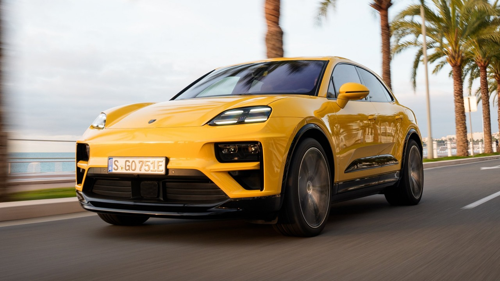

The Porsche Macan is a luxury compact SUV produced by the German automaker Porsche. Launched in 2014, it combines Porsche's signature performance and handling with the practicality and versatility of an SUV. The Macan features a range of powerful engines, including turbocharged four-cylinder and V6 options, delivering sporty acceleration and responsive driving dynamics.
This vehicle features bespoke materials, including high-end fabrics, detailed embroidery, and unique color schemes. It’s designed to offer an ultra-luxurious experience with a focus on elegance and exclusivity, appealing to discerning customers who value individuality and high-end luxury. The Maybach Haute Voiture showcases Mercedes-Maybach's commitment to merging traditional craftsmanship with modern innovation.
The Porsche Macan is one of Porsche's best-selling models, appealing to those who want the brand's renowned sports car performance in a more practical SUV format.
Key Features and Details
Performance
- The Macan offers several engine options, starting with a turbocharged 2.0-liter inline-four engine in the base model, producing around 261 horsepower. More powerful variants, like the Macan S, feature a 2.9-liter twin-turbo V6 engine, delivering up to 375 horsepower, while the Macan GTS can push that up to 434 horsepower. These engines are paired with a 7-speed PDK dual-clutch transmission, providing quick and seamless gear changes.
Interior and Technology
- Inside, the Macan is all about luxury. It features high-quality materials such as leather, brushed aluminum, and carbon fiber, along with meticulous attention to detail. The cabin is designed to offer a driver-focused experience, with a high center console and a multi-function sport steering wheel.
Exterior Design
- The Macan’s design is unmistakably Porsche, with a sleek and aerodynamic silhouette. It has the characteristic Porsche front end with rounded headlights, a wide grille, and prominent air intakes. The rear features a distinctive light strip connecting the taillights, adding to its sporty appeal.
Practicality
- The Macan offers a decent amount of cargo space for its class. With the rear seats up, it provides about 17.2 cubic feet of cargo space, which expands to 52.9 cubic feet when the rear seats are folded down.
Ownership Experience
- Owning a Porsche comes with a sense of prestige, and the Macan is no exception. It's often praised for its strong resale value compared to other luxury SUVs, thanks to Porsche's reputation for quality and performance.
Maintenance
- While the Macan offers a premium experience, it’s important to note that maintenance and running costs can be higher than average, given its performance-oriented design and Porsche's premium brand positioning.
Target Audience
- the Porsche Macan is a unique blend of sports car performance and SUV practicality. It’s a versatile vehicle that doesn’t compromise on driving pleasure, making it a popular choice for those who want a luxurious and dynamic compact SUV.
| Porsche Macan |
| Top Speed |
141 kmph |
| WLTP Mileage |
11.24 kmpl |
| Fuel Type |
Petrol |
| Engine Displacement |
2894 cc |
| Max Power |
434.49bhp@5700-6600rpm |
| Max Torque |
550Nm@1900-5600rpm |
| Transmission Type |
Automatic |
| Fuel Tank Capacity |
65 Litres |
| Ground Clearance Unladen |
285 mm |
| Boot Space |
458 Litres |